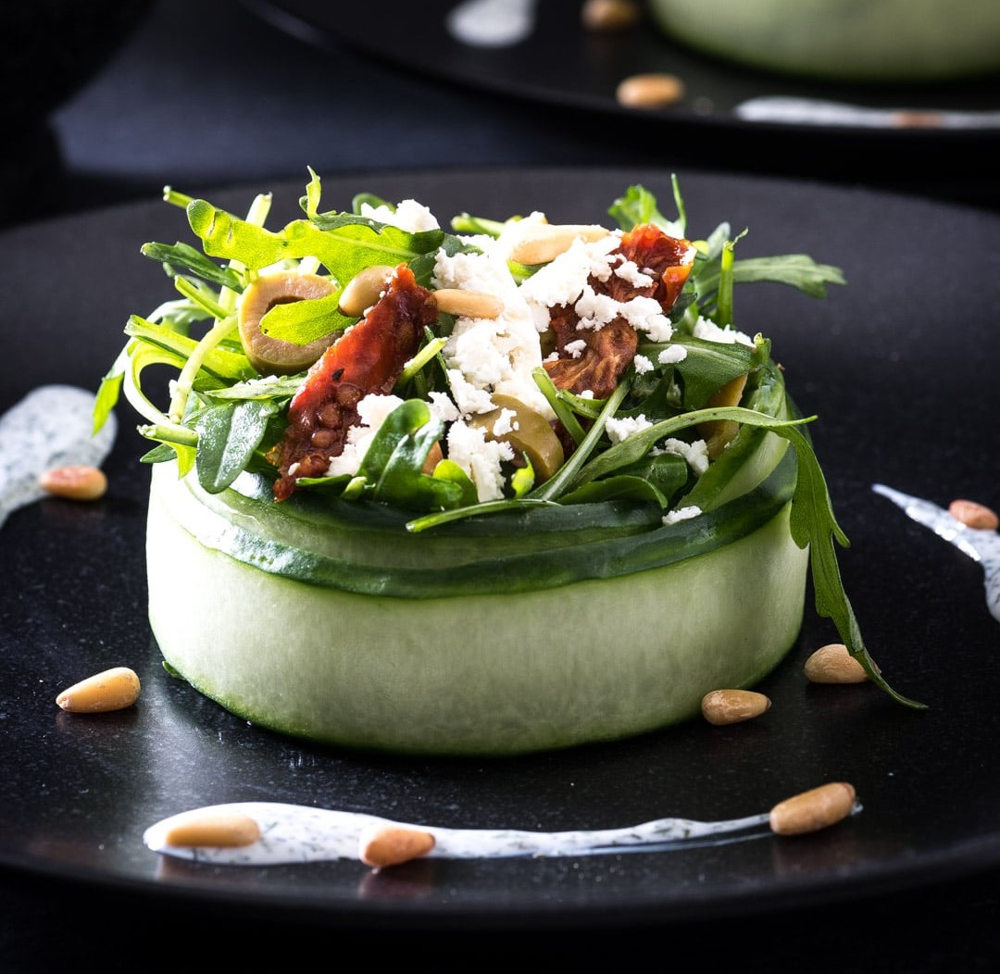

Salade in komkommerbakje
Dit voorgerecht is super makkelijk om te maken en staat met vijf minuten op tafel. Ideaal voor als je mensen op bezoek hebt en een lekker voorgerecht wil serveren.
Ingrediënten
- 1 Komkommer
- 50 gr Rucola
- 10 Groene olijven
- 2 Zongedroogde tomaatjes
- 30 gr Feta
- 2 el Pijnboompitjes
- 1 el Olijfolie
- 1 mespuntje Peper
Dressing
- 3 el Yoghurt (volle)
- 1 mespuntje Peper
- 2 tl Dille (gedroogd)
Bereidingswijze
- Snijd linten van de komkommer met een kaasschaaf en vorm er een bakje van op een bord.
- Doe de rucola in een ruime kom, voeg de olijfolie en de peper toe en schep door elkaar.
- Verdeel de rucola over de twee komkommerbakjes.
- Snijd de olijven in plakjes en de zongedroogde tomaat in repen.
- Verdeel over de salade en brokkel ook de feta er overheen.
- Maak van de yoghurt, peper en dille een dressing en garneer hiermee het bord en de salade.
- Rooster in een droge pan de pijnboompitjes en verdeel over de borden.

Tip Vorm van het eerste lint een rondje. Laat het begin en het einde niet overlappen. Pak een tweede lint en vouw deze er precies andersom omheen. Zo zitten de naden tegenover elkaar en blijven de plakken aan elkaar plakken.